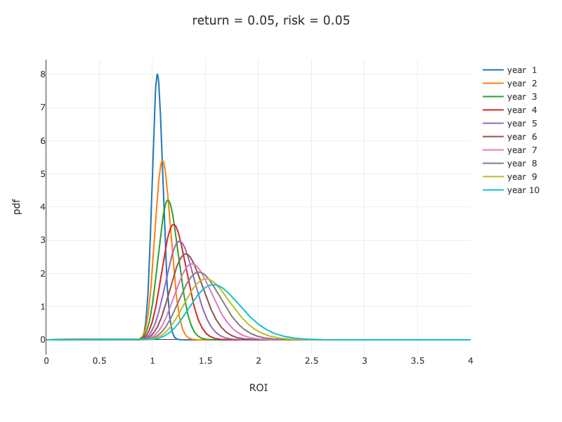
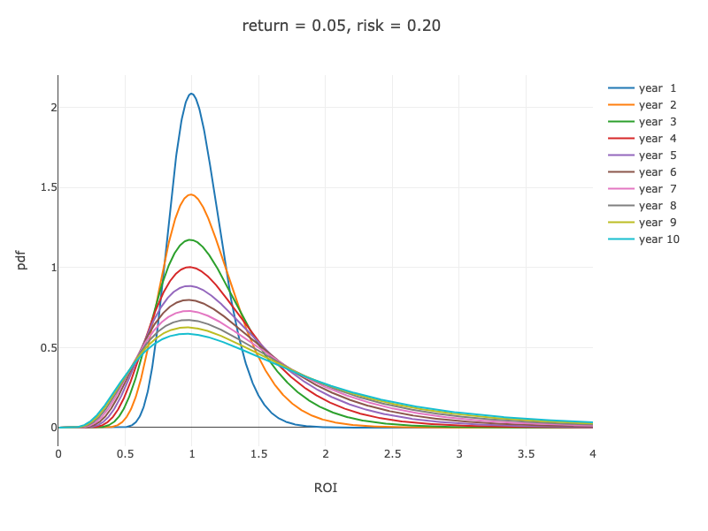
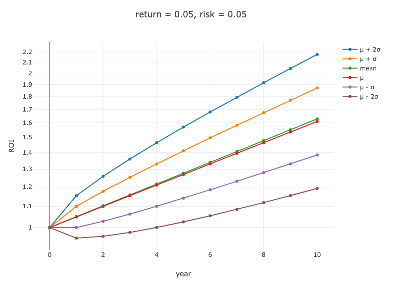
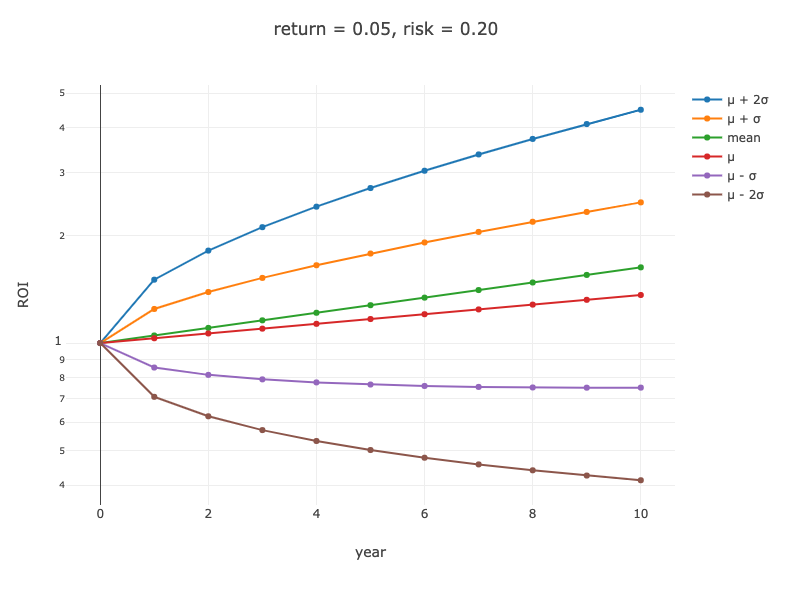

資産運用で 99 点をとる方法とその考え方について説明します。この記事の対象はいわゆる「普通の人」です。
- 資産運用は趣味ではない。
- 資産運用を始めてみたいが何をしてよいのかわからない。
- 資産運用をすでに行っているが毎年ころころと方針を変えてしまっている。
- 資産運用に無駄に時間ばかり費やしている。
- 今のところ資産はすべて銀行の普通口座や定期預金にいれている。このまますべて現金でおいておくのも何か損しているみたいでモヤモヤする。だけど難しいことは勉強したくないし時間も使いたくない。
といった人たちです。
記事では最初に結論、すなわち「やるべきこと」を述べます。資産運用で 99 点の投資効率を達成するためにはこの結論部分だけを実行するだけでよいです。
次に、それだけでどうして 99 点といえるのか、その裏付けとなる考え方や理論を中心に説明します。 99 点をとるにあたってこれらの知識を勉強する必要はありません。しかし、われわれ「普通の人」にとっては最初に決めた方針を貫くこと、別の言い方をしますと「余計なことをしないこと」が難しかったりします。この理論編は方針を継続する支えとなる知識を身につけるためにあります。
最後に、いくつかの資産運用についてよくある質問とその答えをまとめています。
今後もこの記事の内容は必要に応じてアップデートする予定です。ただし、基本となる考え方は本質的でありこれからも変わることはないでしょう。
記事の内容に Typo や間違いを発見した場合、コメント・質問等がある場合は、GitHub Issues に報告や質問をお願いします。記事に載せたほうがよい質問があった場合は、適宜この記事に追加します。
最後にお約束ですが「投資は自己責任」です。この記事はあくまで筆者の考え方をまとめたメモと考えていただければ幸いです。
更新履歴:
- [2020-01-24 Fri] 最適なポートフォリオを個人で組もうとする行為がいかに無駄かについて加筆。
- [2020-01-23 Thu] ドルコスト平均法について加筆。
- [2020-01-23 Thu] いただいた質問（出口戦略・高配当株について）と答えについて追加。
- [2020-01-12 Sun] 中央値について加筆。中央値の良さを表す式を追加。
- [2020-01-07 Tue] Fix Typo ( Issue #32, Issue #33, PR #34, PR #35)
- [2020-01-05 Sun] Fix Typo (25,00 円 => 25,000 円) (via PR #26), PR #28, PR #31, スタイル修正 (PR #29, PR #30)
- [2020-01-05 Sun] お得度を「点数」ではなく「相対的な数字」と表記
- [2020-01-05 Sun] Fix Typo (債権 => 債券)。
- [2020-01-04 Sat] 公開
結論編
結論だけ最初に教えてください。資産運用を始めてみたいのですが何をしたらよいのでしょうか？
以下のことだけをしましょう。これだけで投資効率が 99 点になります。
- 確定拠出年金 (iDeCo または 企業型 DC）を始めます。
- つみたて NISA を設定します。
- さらに余裕がある方は、特定口座でつみたての設定をします。
- 資産運用を始めた直後や、まとまった資金を一時的に入手したときなど、十分な余剰資金（現金）をもっているのであれば、自分のリスク許容度の範囲内で、適切な割合の資産を 一括 で投資します。詳しくは後述の「アセットアロケーション」を参照してください。
- 定期的に（年に 1 回、あるいは数年に 1 回）、アセットアロケーションについて見直しましょう。
1, 2, 3 は一度設定するだけです。 4 は資産運用を始めるとき、あるいは、まとまった資金を贈与されたときなど一時的に行うものです。
この方針をちゃんと守っているならば資産運用に使用する時間は 1 年に 30 分もないはずです。
1, 2, 3, 4 において購入するべきものはすべて同じものでかまいません。以下の条件:
- コスト（信託報酬）の安い
- 時価総額加重平均を採用したインデックスファンド （S&P500、全米、全世界など）
を満たすものにしましょう。これらの条件を満たすものは:
- eMAXIS Slim 米国株式 (S&P500)
- eMAXIS Slim 全世界株式
- SBI バンガード S&P500
- 楽天・全米株式インデックス・ファンド (楽天 VTI)
- 楽天・全世界株式インデックスファンド (楽天 VT)
などです。これらはネット証券 （SBI 証券、楽天証券など）で購入します。
具体的な手順（証券会社の口座の開設や設定方法など）はこの記事では説明しません。この記事では方針とその考え方のみ述べます。
してはいけないことは何でしょうか？
資産運用において大事なのは「余計なことをしない」ということです。例えば、以下のことはしてはいけません。
-
「マーケットタイミング」を計る
例)
- 「今か株価が高値だから、現金をためておこう。暴落したら一挙に購入しよう」
- 「暴落の噂があるからいまのうちに売却して利益確定しておこう」
-
時価総額加重平均インデックスではないファンドや個別株を購入する
例)
- XXX 社の株を買う。「AI 関連ファンド」等を購入する。高配当株を購入する。
-
怪しいもの・実績がないものに手をだす
例)
- 記事の公開にあたってこの部分は削除しました。具体的に書くと怒られそうなので ...察してください。
これらはすべて投資効率を下げる行為です。99 点から点数がどんどん下がっていくと考えてください。そもそもこれらは「選択・判断」しないといけないため、自分の時間がとられてしまいます。
もし、自分が:
- 1 年に 30 分以上資産運用に時間を使っている
- あるいは、1 年に 1 回以上最初の方針にはなかった「投資判断」を行っている
のであれば、それは最初の方針を曲げてしまっている、何かが間違っている証拠です。長期的にはその「ツケ」は必ず払わされるでしょう。
幸いなことに、われわれは「普通の人」であり資産運用は趣味でもエンタメでもありません。そのことが逆にアドバンテージになると考えるとよいでしょう。
「1. iDeCo」「2. つみたて NISA 」「3. 特定口座」 のうちどれを優先するべきですか？
それぞれのお得度をあえて「雑」に相対的な数字で表現するならば:
| 枠 | お得度 |
|---|---|
| 1. iDeCo （上限あり） | 140 |
| 2. つみたて NISA （年 40 万円まで） | 120 |
| 3. 特定口座でインデックスファンド | 100 |
と考えましょう。お得度の高いものから順番に使いきるようにしましょう。
ただし、注意点として iDeCo については 「資金拘束」、すなわち 60 歳 (or 65 歳) になるまでは引き出すことができないという制限があります。 iDeCo についてはこの条件がクリアできる範囲で拠出しましょう。
iDeCo のお得度は実際にはさまざまな条件によって異なってきます。あまり細かいことはここでは述べません。
例
A さんは年間 50 万円投資に資金を回せます。A さんは iDeCo は使用しないとします。
このとき:
- 「今年はつみたて NISA で 20 万円分、特定口座で 30 万円分、購入しました。」
よりは
- 「今年はつみたて NISA で 40 万円分、特定口座で 10 万円分、購入しました。」
のほうがよいです。なぜなら、前者はつみたて NISA の枠を使い切っていないのに、特定口座で商品を購入しているからです。後者のようにまずは（可能なら）つみたて NISA の枠を使い切りましょう。
アセットアロケーション: 資産のうちどれだけの割合をリスク資産に回せばよいのでしょうか？
アセットアロケーションを決めるのは、主に次の 2 段階で行います。
- 投資効率（いわゆるシャープレシオ）のもっともよいリスク資産を選択する。
- 個人のリスク許容度（あるいはリスク選好）に応じて、安全資産である現金と 1 で選んだリスク資産の割合を決定する。
幸いなことに今は 1 については悩む必要はありません。先ほど示した時価総額加重平均にもとづくインデックスファンド 1 択です。商品によって多少のコスト差はありますがもはや誤差の範囲内といってよいでしょう。理論的には「誰でも同じ選択」になります。
個人によって変わるのは、2 の部分です。
例: アセットアロケーション
資産の合計が 1,000 万円だとした場合、リスク許容度に応じたアセットアロケーションの目安は以下のようになります。
| リスク許容度 | 現金:リスク資産 | 現金 | リスク資産 | 全体のリターン | 全体のリスク |
|---|---|---|---|---|---|
| 資産が50%減る (= 500万円になる) ことを許容できる | 0:100 | 0万円 (必要最小限なものは除く) | 1,000万円 | 5% | 10% |
| 資産が25%減る (= 750万円になる) ことを許容できる | 50:50 | 500万円 | 500万円 | 2.5% | 5% |
| 資産が10%減る (= 900万円になる) ことを許容できる | 80:20 | 800万円 | 200万円 | 1% | 2% |
- リスク資産とは (iDeCo + つみたて NISA + 特定口座) の合計です。
- リスク資産の最大損失額として、ここでは-50%と仮定しています。これは相当（安全側に倒した）「悲観的」な見積もりです。一般にはもう少し「楽観的」な数字（-33% など）, あるいは リスクの 3 倍（= 1%以下の確率） を用いますが、われわれ「普通の人」は、慣れるまでは -50%（およそ半額になる） くらいと見ておけば十分でしょう。ただし、必要以上に保守的にならないでください。
- ここでは仮にリスク資産のリターンを 5%、リスクを 10%としています。
- 現金とリスク資産の間には相関関係はないので、現金比率をいくつにしようと、アセットアロケーション全体のシャープレシオ (= (リターン / リスク)) は変わりません。どのようなアセットアロケーションにしようと、全体のシャープレシオは、1 で選んだもっとも投資効率のよいリスク資産のシャープレシオと一致します。現金（無リスク資産）のリターンはゼロとしています。
- アセットアロケーションによって、全体のリスクとリターンが決まるため、資産運用のパフォーマンスは結局のところ「アセットアロケーション x 資産運用の年数」でほぼ決定されます。
資産運用とは、結局のところ、アセットアロケーションにおいて、現金とリスク資産の比率を適切な値に調整しましょうということです。それでほぼすべてが説明できます。それ以外はすべてそのための手段にすぎません。
イメージとしては、このようなスライダー:
現金 リスク資産
のバーを本人のリスク許容度から大きくずれたりしないように調整するというのが資産運用です。
いわゆる「つみたて」も、あくまでこのスライダーのバーが時間の経過とともにいつのまにか大きくずれている、現金の割合が多くなっていく、のを防ぐためのもの、と考えればよいでしょう。
インデックスファンドは流動性が高い資産です。現金とリスク資産は、必要に応じていつでもすぐに（ほぼ数日で）変換可能です。つまり、現金が予想以上に必要になったときは、リスク資産の一部を売却すればよいだけの話です。
資産運用とは決して「節約しよう！」という意味ではないです。「節約」と「運用」は分けて考えるべきです。例えばフルインベストメントしている人が、予想以上に現金が必要になったときは、必要なぶんだけリスク資産の一部を売却すればよいです。そこは躊躇する必要はまったくありません。必要なときはどんどんお金は使いましょう。資産運用とは、あくまで資産のうち「適切な割合」をリスク資産にしておくということです。
参考) Two-Fund Separation Theorem and Applicationsk, Two-fund separation - Individual decision
例: A さんの場合
A さんは社会人 8 年目です。今まで資産運用はまったくしてきませんでした。 A さんの資産は銀行口座に 400 万円です。
現金 リスク資産
- A さんは、現在の資産 400 万円のうち 4 分の 1 (= 100 万円) 資産が減っても、十分許容できると考えました。つまり、アセットアロケーションは 現金:リスク資産 = 50:50 にすると決めました。
- A さんは、現在 400 万円ある現金のうち、50%である 200 万円を一括で投資しました。
現金 リスク資産
A さんの今の手取りは 40 万円です。A さんは生活費として 24 万円使用します。つまり毎月 16 万円貯金できます。
- A さんは毎月貯金していた 16 万円のうち、50%である 8 万円を資産運用に回すことにしました。
- A さんは iDeCo をはじめました。月々の拠出額は最大の 23,000 円です。
- A さんは つみたて NISA をはじめました。毎月 33,333 円 (≒ 400,000 / 12)、つみたて NISA に設定しました。
- A さんは、特定口座で毎月 25,000 円のつみたてを設定しました。毎月の投資額はこれでおよそ合計 8 万円になります。
A さんがやるべきことはこれで終了です。あとは、定期的にアセットアロケーションを見直すだけでよいでしょう。
例: B さんの場合
B さんは社会人 2 年目です。今まで資産運用はまったくしてきませんでした。 B さんの資産は銀行口座に 100 万円です。
現金 リスク資産
- B さんは、現在の資産 100 万円のうち 半分(= 50 万円) 資産が減っても、十分許容できると考えました。つまり、アセットアロケーションは 現金:リスク資産 = 0:100 にすると決めました。いわゆるフルインベストメントです。
- B さんは、現在 100 万円ある現金のうちほど、最低限残しておく部分は除いて、ほぼすべてを一括で投資しました。
現金 リスク資産
B さんの今の手取りは 20 万円です。B さんは生活費として 15 万円使用します。つまり毎月 5 万円貯金できます。
- B さんは iDeCo をはじめました。月々の拠出額は最大の 23,000 円です。
- B さんは つみたて NISA をはじめました。最大のつみたて額は設定できないので、毎月 25,000 円、つみたて NISA に設定しました。
B さんがやるべきことはこれで終了です。あとは、定期的にアセットアロケーションを見直すだけでよいでしょう。
ほんとにやるべきことはたったそれだけでいいのですか？早い話が一度設定した後は、「何もしなくてよい」ということでしょうか？
はい。一度設定した後は基本放ったらかしにしましょう。資産運用に時間を使う必要はありません。一度設定したあとは定期的に、あるいは何かライフイベントがあったときに、アセットアロケーションを見直せばよいでしょう。
これで結論編はおわりです。この通りにきちんと実行できる、あるいはもうすでに実行できているという人は、これ以上、この記事を読まなくても大丈夫です。ここから先はある意味すべて蛇足です。
理論編
次に理論編です。先程の結論で示した方針を実行するのは簡単そうに聞こえます。ですが、この世の中にはその妨げになる「情報」がたくさんあふれています。
- 「いま、株価は史上最高値です！ PER は過去最高です！暴落は 2 年以内におとずれるでしょう！」
- 「暴落はまだ始まったばかりです。これから株価はもっと下げます。全部、現金にしましょう！」
- 「インデックス投資なんて大して儲かりませんよ！短期間で大儲けするなら、FX です！」
- 「仮想通貨で 1 億円儲かりました！」
- 「XXX 社の株が狙い目です！確実に儲かりますよ！」
- 「これからは AI の時代です。AI 関連の会社の株を買うのがおすすめです！」
などですね。我々のような「普通の人」は普通の耐性しか備えていないので、これらの雑音や誘惑に対抗できずに、どんどんダークサイドに落ちていくことでしょう。
考え方や理論を学ぶ重要性はここにあります。人間の感情を巧みについてくるこれらの情報への対抗力を身につけるために、知識武装をするのです。
「インデックスファンドをひたすら買うだけで 99 点を達成」できるにもかかわらず、多くの人が（本人にはその気がないのかもしれませんが）「もっとよい成績をとってやろう」といつの間にか思ってしまい、余計なことをしてしまい、その結果、投資効率が 99 点からどんどん落ちていくのです。
基本となる考え方
ここでは要点だけ述べます。
- 株価はランダムウォークしながらも長期的には右肩上がりだという前提にたちます。
- インデックスファンドは株式市場をまるごと買う行為です。つまり、インデックスファンドをひたすら買うことで、資産運用の成績は、市場平均とほぼ同じになります。詳しくは後述。
- すべての情報は市場に織り込み済みです。いわゆる市場は効率的であるという前提にたちます。完全に効率的かというとそうではないでしょうが、少なくとも、個人投資家が継続的に利益を得られるほどの非効率性はないという意味で、十分に効率的と考えるべきです。
- つまり、すべての情報を織り込んだ・市場全体の総意によって決定されている株価はいつだって「適正価格」です。「今の株価は高値圏」「今の株価は安値圏」「そろそろ暴落が来そう」などといった分析・情報はまったく無意味と思いましょう。株価は見る必要はありませんし予想する必要もありません。株の買い時・売り時はありません。あえて言うなら、365 日 24 時間、いつだって（リスク許容度の範囲内で）「買い時」と仮定しましょう。
- 市場平均に勝とうとすればするほど、余計なコストがかかり、長期的には市場平均に負けていきます。
- 長期的に市場平均に勝てる個人投資家はほぼいません。40 年くらいの期間だと、市場平均に勝てる人は、50 人に 1 人くらいはいるかもしれませんが、われわれ「普通の人」がその 1 人である信じる根拠にどこにもないです。
- つまり、個人投資家が長期でとれる最大の成績は「市場平均」です。
参考) 敗者のゲーム
市場平均ってなんか言葉が弱そうなんですけど。ほんとに市場平均を目指すだけでいいんですか？もっと上を目指さなくてよいのでしょうか？
はい。
- 株式市場の取引のほとんどは「機関投資家」というプロ中のプロにより行われています。
- 市場平均というのは、プロ中のプロである巨大な専門機関のトップクラスたちの成績の平均ということです。
- われわれが株を買うときその裏で株を売っている相手は巨大な専門機関のトップクラスであり、われわれが株を売るときその裏で株を買っている相手もプロです。
- 市場平均に勝とうというのは、われわれ「普通の人」が、情報も頭脳も分析力もすべてにおいて優れているプロ中のプロに勝とうとする行為です。
- ちなみに機関投資家自身も市場平均には勝てません。なぜなら、市場平均というのは彼ら自身だからです。自分は自分には勝てません。
- そのような知識も経験も分析力も圧倒的に劣るわれわれ「普通の人」が、プロ中のプロである彼らの成績の平均をとる方法があります。それが「株式市場をまるごと」買うということです。インデックスファンドはそれを可能にします。
つまり、インデックス投資とは、プロ中のプロがだした結果の平均である「市場平均」を、なんの努力もしない、勉強をしないで、（言葉は悪いですが）美味しいところだけいただくということです。
インデックスファンドをひたすら買うだけで、あなたは「普通の人」ではなく、「プロ中のプロの平均」になります。
この際、決して「市場平均よりよい成績をとってやろう」と「勝手な行動」をとらないでください。その瞬間、魔法がとけて、あなたはただの「普通の人」になってしまいます。ただの「普通の人」の投資判断が、長期で継続的に市場平均に勝てることはないでしょう。
参考) 敗者のゲーム
さきほどから 99 点といっていますが、その点数はどういう意味でしょうか？
仮に以下のような理想的なあなた専属の運用ロボットがいるとして:
- 基本的な資産運用方針はあなたとまったく同じ。
- あなたのリスク許容度を完璧に理解している。
- ただし、手間を惜しまずできるだけ早くあなたの資産をあなたの代わりに投資に回してくれる。例) 「毎月つみたて」のような特定の日を待たずに、手動でタイムリーに購入。
- アセットアロケーションのリバランスも、リバランスのコストよりもリバランスのメリットがある限り頻繁に行う。手間をまったく惜しまない。
この理想的なロボットに運用をまかせたときの成績を X とした場合、だいたい
0.99 * X くらいの成績を手間をかけることなくとりましょう、という意味です。
つまり、手間をかければかけるほど理想的な 100 点に近づくことはできますが、99 点を 100 点にするのはその手間を考えたら割にあわない。手間なしで 99 点で十分です。
どうして時価総額加重平均にもとづくインデックスファンドが良いのでしょうか？なにか理論的な裏付けがあるのでしょうか？
理論的な裏付けがあります。時価総額加重平均インデックスにもとづくポートフォリオ(= 市場ポートフォリオ: Market Portfolio) がもっとも投資効率がよいポートフォリオ (= tangency portfolio)と、理論上はされています。
理論がどこまでの精度で当てはまるのかはわかりませんが、少なくとも「普通の人」がそれを否定して他のポートフォリオを選択する理由はないでしょう。
以下は証明にはなっていませんが、直感的に「なんとなく納得」するには、これで十分でしょう。
- 株の需要と供給は一致する
- 最適な組み合わせがあると仮定し、それを A とする
- 個々の投資家は最適な組み合わせである A を選択しようとする
この場合、市場に存在する各銘柄の時価総額と、全投資家が保有するの株の価値の合計額が一致するのは、A が時価総額加重平均である場合のみです。
参考) Two-fund separation - Market level, Capital market equilibrium - The Capital Asset Pricing Model
長期で資産運用するのであれば、結果は期待リターン（平均値）に収束していくんだから、リスクは気にしなくてよいのでは？リターンだけ追求すればよいのでは？
いいえ、違います。リスクは資産運用の敵です。リスクは「平均値」（期待リターン）には影響は与えませんが、「中央値」（上位 50%の成績）に影響を与えます。
これは実際に成績の分布を見るのがわかりやすいでしょう。たとえば、以下のような 2 つのファンドがあるとします。
| リターン | リスク | |
|---|---|---|
| A | 5% | 5% |
| B | 5% | 20% |
A、B どちらもリターンは同じ 5%ですが、A の方はリスクが 5%、B の方はリスクが 20% です。A, B をそれぞれ 10 年間投資した場合の成績を見てみましょう。
実際はこのような A, B が両方存在することはないです。なぜなら、全員 A を選択するからです。B は誰からも選ばれません。
リターンの分布 (x 軸: 成績, y 軸: 確率密度)
A) リターン 5%, リスク 5% の場合: (html)

B) リターン 5%, リスク 20% の場合: (html)

- A と B を比較した場合、成績の分布の形はずいぶん異なります。B のほうが A よりも分布は「左側に集中」していますが、いずれも期待リターンは同じになります。たとえば 10 年後の期待リターンはどちらも 1.629 (= 1.05^10) です。
- 一般に成績の分布は、左に偏った、右側に長く伸びるロングテールになります。リスクが高ければ高いほどその傾向がつよくなります。
- リスクが高ければ高いほど、多くの人が左側に偏ってしまう一方、一部の成績のいい「ラッキー」な人は分布上ではいくらでも右側に伸び続けます。
- 期待リターンはそれらの一部の「とてもいい成績をとっている人」の影響が強くなります。実際にはそのような「大儲け」できる人はほとんどいないにもかかわらず、です。
- リスクがある限り、期待リターンを達成できる人は常に 5 割を下回ります。リスクが大きくなれば大きくなるほど、期待リターンを達成できる確率は小さくなります。中央値（上位 50%の人の成績）は期待リターンを常に下回ります。
期待リターン(mean), 中央値(median; μ)、中央値 ± 標準偏差 (x1, x2) のチャート (x 軸: 年数, y 軸: 成績 (対数))
A) リターン 5%, リスク 5% の場合: (html)

B) リターン 5%, リスク 20% の場合: (html)

| percentile | A (risk: 5%) | B (risk: 20%) |
|---|---|---|
| μ + 2σ (97%) | 2.176 | 4.498 |
| μ + σ (84%) | 1.874 | 2.476 |
| mean (期待リターン) | 1.629 | 1.629 |
| 中央値: μ (50%) | 1.611 | 1.363 |
| μ - σ (16%) | 1.386 | 0.750 |
| μ - 2σ (2.3%) | 1.192 | 0.413 |
10 年後の中央値は、A の場合 1.611, B の場合 1.363 です。リスクが大きくなればなるほど、期待リターン（平均値）と中央値の隔離は大きくなります。
期待リターンは一部の「ラッキー」な人の影響を強く受けてしまうので、期待リターンのみを見るのはやめましょう。それはあまり意味がありません。極端なことをいえば、リスクを増やすことで、分布グラフを右に伸ばすことでいくらでも可能であり、その一方、左側はゼロ以下には伸びません。そのため、リスクを増やすことで期待リターンを 見かけ上 いくらでも増やすことができてしまいます。レバレッジをかければかけるほどリターンが高くなります。
期待リターンよりは、むしろ中央値のほうが「信頼」できます。中央値はリターンとリスクの両方の影響を受けます。中央値は、リターンが大きくなればなるほど大きく、リスクが大きくなればなるほど小さくなります。
資産運用においては、リターンが同じであれば、リスクが小さければ小さいほどよいです。リターンをリスクで割った値、いわゆる「効率」がもっともよいのは、さきほど述べたように、理論上、時価総額加重平均インデックスです。「時価総額加重平均に基づくインデックスファンドだけ買っておけばよい」というのは、決して手抜きというわけではなく、それが最も投資効率を高めるからです。
どうして投資効率として「リターンをリスクで割る (= return / risk) 値を採用するの？ リターンをリスクで引く (= return - risk)、あるいは (return / (risk)^2) とか別の計算式じゃないのはどうして？」と 一部の人は疑問に思うかもしれませんが、リターンをリスクで割るのは、決して適当な式というわけではなく、ちゃんと理論的に意味がある式です。詳しくは省略。
これらのチャートは、株価の変動は対数正規分布だというモデルにもどついて描きました。
詳細は省きますが、中央値について要点だけここで述べておきますと、リターンを m
(1.0 ベース)、リスクを s とした場合、以下の μ の値:
μ = ln(m) - ln((s/m)^2 + 1) / 2
が中央値のよさを表すと考えればよいでしょう。この μ は大きれば大きいほどよいです。
例: リターン 5%、リスク 5% の場合:
μ = ln(1.05) - ln((0.05/1.05)^2 + 1) / 2 ≒ 0.048
例: リターン 5%、リスク 20% の場合:
μ = ln(1.05) - ln((0.20/1.05)^2 + 1) / 2 ≒ 0.031
μがプラスであれば、資産運用の年数がたつにつれて、中央値は増加していきます。μがマイナスであれば、資産運用の年数がたつにつれて、中央値は減少していきます（0 に近づいていきます）。
リターンが プラス (=> m が 1.0 より大きい）であっても、リスクが大きい場合は、μ がマイナスになりえます。これは中央値の観点ではどんどん損する「マイナスサム」のゲームと考えるべきであり、そのようなゲームには決して参加してはいけません。
参考) Lognormal property of stock prices assumed by Black-Scholes (FRM T4-10), Why Lognormal Distribution is Used to Describe Stock Prices
その他のよくある質問とその答え
インデックスファンドとしては、アメリカ株 (S&P500 や VTI）100%でよいのでしょうか？ それとも、VT のように全世界株のほうがよいのでしょうか？
TODO: 書きます。
軽く書いておきますと、どちらを選ぼうと、大きなミスにはならないでしょう。このあたりまでくると、どちらも正解です。 99 点 vs 98 点 とかそれくらいの差だと思います。
リスク資産として株式だけでなく債券も入れたほうがよいといわれたのですが？
「普通の人」はリスク資産は株式 100%でいいと思います。
「株式と債券」などのようにリスク資産を 2 種類以上持ち、それを組み合わせたアセットアロケーションをつくるのは、普通の人にとっては難しすぎると思います。普通の人がそれをしたからといって、結果として得られるリスク資産の全体の投資効率（シャープレシオ）が、もともとのリスク資産 1 種類（市場ポートフォリオ）の投資効率を上回ることはまずありません。
それよりは、リスク資産はシンプルに 1 種類だけにしておき、アセットアロケーションをシンプルに保ったほうがよいでしょう。簡単にリスクとリターンを把握できるし・リスク・リターンの調整も簡単です。リスクとリターンの調整は、あくまで、現金とリスク資産の割合で行いましょう。
「債券をいれたほうが変動がマイルドになる」と同じ効果を得たいなら、単にリスク資産の割合を減らすだけでよいです。
普通の人が、例えば以下のような
- 現金 40, 債券: 30: 株式: 30
債券をいれたアセットアロケーションを微調整して頑張ってつくったところで、以下のような、シンプルなアセットアロケーション
- 現金 60: 株式: 40
と比較して、全体のリターン・リスクが特別によくなるといったことはまず起きないでしょう。むしろ悪化する可能性が高いです。
普通の人は、管理できない・全体のリスク・リターンを簡単に把握できない 1 のような複雑なアセットアロケーションではなく、シンプルに 2 で必要十分です。
「銘柄の組み合わせが...」「最適なポートフォリオーを組むには株式と債券と金を...」といった資産運用に関する記事は未だに多く見かけますが、個人で複数のリスク資産を組み合わせてポートフォリオを工夫して組む必要性はありません。そんな時代はとっくに終わっています。
いまは、全世界株等の投資信託（市場ポートフォリオ）の商品を 1 点だけかっておけば、リスク資産に関しては自然と最適なシャープレシオがよいポートフォリオになります。もともとそのためのインデックス投資であり投資信託です。最適なポートフォリオを個人でがんばって組む必要性があった時代はとっくに終わっています。
いくら時間を使って「私の考えた最強なポートフォリオ」を考えたとしても、個人がつくるポートフォリオが市場ポートフォリオにシャープレシオで勝てることはありません。時間を使ってわざわざ損をするのは無意味ですのでやめましょう。
普通の人がやらなければいけないのは、自分の総資産のうち、何%をリスク資産に割り当てるか、そこだけです。資産運用に関する固定観念や古いイメージは捨てましょう。
個別株ってだめなんですか？
投資効率の観点では、個別株は分散が弱まる(= リスクが大きくなる）要因であり、投資効率が下がります。資産運用が趣味ではない普通の人が、時間をつかってまで個別株に手を出す必要性はありません。
資産運用が趣味やエンタメという人でない限り、個別株をポートフォリオにいれる必要はまったくありません。
レバレッジ
レバレッジというといかにも怪しそうですが、レバレッジはリスク・リターンを調整するためのきちんとした手法のひとつです。ただし、「普通の人」があえて高いリスクをとってまで高いリターンを求める必要が本当にあるかは、慎重に判断する必要があるといえます。
すくなくともレバレッジは「高コスト」という明確なリターンへの影響があるので、それらを十分理解した上で、よほどの特殊な状況におかれている一部の人を除いては、必要ないでしょう。
アセットアロケーション的には、レバレッジは、例えば「現金:リスク資産 = -100:200」に相当します。いわゆる「負のアロケーション」を含むアロケーションです。「現金:リスク資産 = 0:100」よりもハイリスク・ハイリターンになります。ただし、コストの分だけ、投資効率は低くなります。
インデックスファンドは内部では海外の株式に投資していますが、為替リスクはどうなんでしょうか？
例えば
- S&P500 インデックスのリスクが仮に 20% (実際はこんなに高くありません）
- ドル円の為替リスクが 10%
とします。
さて、S&P500 インデックスとドル円の変動の間に相関がないとした場合、日本円で S&P500 のような（内部では）ドル建ての商品に投資する場合、日本円で考えた場合のトータルのリスクはどうようになるでしょうか？
この場合は、10% + 20% = 30% になるのではなく、22.4% になります。
δ^2 = 0.2^2 + 0.1^2 + 2 * 0 * 0.2 * 0.1 = 0.05
δ = sqrt(0.05) = 0.224 (= 22.4%)
つまり為替リスクの貢献度は 2.4% ほどです。為替リスクが 10%だからといって、そのまま 10% リスクが増えるわけではありません。そのため（内部で）ドル建ての商品に投資するときに、必要以上に為替リスクを恐れる必要はありません。
「今は高値だから現金を貯めておいて暴落時に買おう」はどうしてだめなのでしょうか？一見うまくいきそうなのですが。
「今は株価は高値だから買うのは控えて現金をためておこう。暴落したら買おう」と思ってしまうのは人間としての自然な心理ですが、それは机上の空論です。それが継続的にうまくいくことは決してありません。
以下にそれを証明します。
例えばインデックスファンド 楽天 VTI を買っている人がいるとしましょう。
その人が「今は 楽天 VTI の株価は高値だから買うのは控えて現金をためておこう。暴落するときを待ってそのタイミングで買おう」という戦略をたてるとします。
もしその戦略が「うまくいく」と仮定します。すると、なにが起きるでしょうか？
そのような戦略がうまくいくなら、いまごろ「そういうことをする」ファンドが登場しているはずです。
たとえば、SBI 証券から
「SBI 「楽天 VTI」 を暴落時に買うファンド」
が登場しているはずです。このファンドの運用方針は:
- 「楽天 VTI」 の価格が高いときには「楽天 VTI」 を購入するのではなく現金としてためておく
- 「楽天 VTI」 の価格が暴落したときに「楽天 VTI」 を購入する
となります。このファンド「SBI 「楽天 VTI」 を暴落時に買うファンド」の運用成績は「楽天 VTI」の運用成績を上回ります。
すると、今度は楽天証券から
「楽天 「SBI 「楽天 VTI」 を暴落時に買うファンド」を暴落時に買うファンド」
が登場することでしょう。このファンドの運用方針は:
- 「SBI 「楽天 VTI」 を暴落時に買うファンド」 の価格が高いときには「SBI 「楽天 VTI」を暴落時に買うファンド」を購入するのではなく現金としてためておく
- 「SBI 「楽天 VTI」 を暴落時に買うファンド」 の価格が暴落したときに「SBI 「楽天 VTI」を暴落時に買うファンド」 を購入する
となります。このファンド「楽天 「SBI 「楽天 VTI」 を暴落時に買うファンド」を暴落時に買うファンド」の運用成績は「SBI 「楽天 VTI」 を暴落時に買うファンド」の運用成績を上回ります。
すると、今度は SBI 証券から
「SBI 「楽天 「SBI 「楽天 VTI」 を暴落時に買うファンド」を暴落時に買うファンド」を暴落時に買うファンド」
が登場することでしょう。
このファンド「SBI 「楽天 「SBI 「楽天 VTI」 を暴落時に買うファンド」を暴落時に買うファンド」を暴落時に買うファンド」」の運用成績は「楽天 「SBI 「楽天 VTI」 を暴落時に買うファンド」を暴落時に買うファンド」の運用成績を上回ります。
そして、それをさらに暴落時に買うようなファンドが登場するでしょう。
そして、それをさらに暴落時に買うようなファンドが登場するでしょう。
....
このあたりでこのような戦略が机上の空論であるということに気づくと思います。
証明終わり。
(半分、冗談ですけど、それなりに核心はついています。）
もう少し真面目に話をすると、そのような「今は高値だから」という情報はとっくに市場に織り込み済みです。もし、それが本当ならば、プロ中のプロたちは売却をはるか昔に終わらせています。それらの材料を考慮して適正な値に下がった結果が今の価格です。
さきほどは最大損失額を 50%としていましたが、インデックスファンドの価格がゼロになることはないのでしょうか？とても心配です。
インデックスファンドの価格がゼロになるとすれば、それは資本主義が崩壊、貨幣経済もおそらく崩壊、現金もおそらく意味がなくなっている世界です。いわゆる、北斗の拳のような ヒャッハー な世界、物々交換な世界になっているでしょう。
そのような事態を心配するのであれば、むしろ北斗神拳を今のうちから身に着けてそのような事態に備えておくべきです。
つみたて NISA と 一般 NISA はどちらがお得ですか？
TODO: 書きます。
短く結論を書きますと、MIRR (修正内部利益率) の観点ではどちらもほぼ同じです。普通につみたて NISA でよいと思います。
投資信託をオススメしているようですが、海外 ETF を直接購入するのはどうでしょうか？
手間は気にしない、外国税額控除をきちんとするのであれば、ETF が依然としてコストの観点では若干有利です。ですが、ほとんど差がない、99 点が 99.1 点になるといった誤差レベルですので、あえて手間をかけてまで ETF を直接購入する必要はほとんどの人にとってはないでしょう。
参考) 計算結果 (in Rust)
さきほどの A さんの例だと、50%を一括で投資していましたが、それでよいのでしょうか？少しずつ分割して投資したほうがよいのではないでしょうか？
あなたは「ドルコスト平均法の呪い」にかかっています。優先すべきは、あくまでアセットアロケーションであり、決してアセットアロケーションを考慮しないで「ドルコスト平均法」自体を「目的」にしてはいけません。
たとえば、50%を:
- 10%ずつ 5 年にわけて分割で投資する (ドルコスト平均法; DCA: Doller Cost Averaging)
- あるいは、50%を一括投資する (LSI: lump-sum investing)
それぞれの場合、どのようなアセットアロケーションになるか見てみましょう。
(ここでは、簡単化するため毎月のつみたて額は考慮しないとします)
| ドルコスト平均法 | 適切な一括投資 | |
|---|---|---|
| 1 年目 | 90:10 | 50:50 |
| 2 年目 | 80:20 | 50:50 |
| 3 年目 | 70:30 | 50:50 |
| 4 年目 | 60:40 | 50:50 |
| 5 年目 | 50:50 | 50:50 |
| 6 年目 | 50:50 | 50:50 |
| 7 年目 | 50:50 | 50:50 |
| 8 年目 | 50:50 | 50:50 |
| ... | ... | ... |
「ドルコスト平均法」は、A さんのリスク許容度が 50:50 にも関わらず、最初の 5 年間は、A さんはリスク許容度よりも圧倒的に低いリスクしかとっていません。 必要以上にローリスク・ローリターンなアセットアロケーションをとるには、合理的な理由が必要です。
このような「ドルコスト平均法」をとる人の心理は、大抵の場合、「一括投資した直後に暴落がきたらどうするんですか！」だと思いますので、試しに、今後 10 年の間に 1 年だけ暴落(-20%)が起きる、それ以外の年はリターンが 4%という場合、50%部分のそれぞれの 10 年後の成績はどうなるか見てみましょう。
| 暴落が起きる年 | ドルコスト平均法 | 適切な一括投資 |
|---|---|---|
| 1 年目 | 1.302 | 1.139 |
| 2 年目 | 1.237 | 1.139 |
| 3 年目 | 1.174 | 1.139 |
| 4 年目 | 1.113 | 1.139 |
| 5 年目 | 1.054 | 1.139 |
| 6 年目 | 1.054 | 1.139 |
| 7 年目 | 1.054 | 1.139 |
| 8 年目 | 1.054 | 1.139 |
| 9 年目 | 1.054 | 1.139 |
| 10 年目 | 1.054 | 1.139 |
- ドルコスト平均法の場合は、暴落が起きる年によって、最終的なパフォーマンスが変化します。
- 適切な一括投資の場合は、暴落がいつ起きても、パフォーマンスは同じ (= 1.139) です。
つまり、ドルコスト平均法は適切な一括投資に比較して:
- 1 年目に暴落が起きると相当得 (+0.164)
- 2 年目に暴落が起きると得 (+0.098)
- 3 年目に暴落が起きると少し得 (+0.035)
- 4 年目に暴落が起きると少し損 (-0.026)
- 5 年目に暴落が起きると損 (-0.084)
- 6 年目に暴落が起きると損 (-0.084)
- 7 年目に暴落が起きると損 (-0.084)
- 8 年目に暴落が起きると損 (-0.084)
- 9 年目に暴落が起きると損 (-0.084)
- 10 年目に暴落が起きると損 (-0.084)
- ...
となるような（一般にはマイナスサム）な賭けに参加するようなものです。このように「特定の期間に暴落が起きる」ことに合理的な理由もなく賭けることは避けるべきです。すべての情報は株価に織り込み済みと考えるのであれば、このような賭けに参加するべきなのは、自分だけがまだ市場に織り込まれていない特別な情報をなぜか知っているという特殊な状況のみでしょう。 (これはかなり乱暴な議論なのですが、呪いを解くにはしょうがない...)
難しくなってきたので、ここで話を簡単にしましょう。資産運用のリターンは結局のところ「できるだけ多くの資産」を「できるだけ長い年数」市場においておくことでほぼ決定されます。そのため、リスク許容度の範囲内で、「リスク資産の額」x「年数」であらわされる「掛け算の結果」をできるだけ多くするのが重要と考えるとよいでしょう。
例)
適切な一括投資をすることで:
- 「500 万円」x「5 年間」
の資産運用をできる機会があったとしましょう。この際に、適切な一括投資ではなく、たとえば 5 年間に渡って分割投資・ドルコスト平均法を選択するということは、「500 万円」x「5 年間」の資産運用ができる機会があったにもかかわらずその機会を自ら捨てて:
- 「（平均して）250 万円」x「5 年間」
- （別の見方をすれば）「500 万円」 x 「（平均して）2.5 年間」
という選択を自らしているようなものです。「長期投資」が重要だと理解していながら、ドルコスト平均法は自ら「長期投資」する機会を捨てているのです。
ちなみにアセットアロケーションを無視すれば「一括投資 vs ドルコスト平均法」は極論すれば、 期間内において、その部分のみに注目した場合:
- 「現金:リスク資産 = 0:100」（ハイリスク・ハイリターン）
- 「現金:リスク資産 = 50:50」(ローリスク・ローリターン） （期間内の平均。期間後には 0:100 になっていることに注意)
のアセットアロケーションのどちらがよいでしょうか？という話と同じです。どちらもシャープレシオは同じであり、どちらが適しているかは本人のリスク許容度に依存します。
アセットアロケーション全体のリスク許容度を無視して、「一括投資 vs ドルコスト平均法」の優劣を部分的に論じるのは無意味です。
「一括投資」でなくアセットアロケーション全体のリスク許容度を考慮した「適切な一括投資」が重要です。
例: 現状維持バイアスによる「ドルコスト平均法の呪い」
A さんは、長年資産運用を続けてきました。現在の資産は、現金:リスク資産 = 500 万円 :500 万円 です。
さて、ここで次の 2 通りのケースを考えてみましょう。
- A さんは相続（あるいは贈与等）で 1000 万円の 現金 を手にいれました。
- A さんは相続（あるいは贈与等）で 1000 万円分の 株 を手にいれました。
A さんのリスク許容度はいぜんとして、現金:リスク資産 = 50:50 です。それぞれのケースにおいて、 A さんはどのようなアセットアロケーションにするのがよいでしょうか？
この 2 通りのケースに対して、もしあなたが:
「1000 万円の 現金 を手にいれました」 の場合:
「1000 万円の半分の 500 万円を投資に回したい。ただし、一括投資した直後に暴落する「リスク」を避けるため、500 万円は 5 年にわけて分割投資しよう」と考えるのであれば、
アセットアロケーションは次のようになるでしょう。
| 現金:リスク資産 | |
|---|---|
| 贈与前 | 500:500 |
| 贈与直後 (+ 現金 1000) | 1500:500 |
| 1 年目 | 1400:600 |
| 2 年目 | 1300:700 |
| 3 年目 | 1200:800 |
| 4 年目 | 1100:900 |
| 5 年目 | 1000:1000 |
「1000 万円分の 株 を手にいれました」 の場合:
「リスク資産が多すぎるので、贈与された 1000 万円分の株のうち 50%は売却しよう。ただし 500 万円分を一括で売却した直後に株価が暴騰したらもったいない。その「リスク」を避けるため、は 5 年にわけて分割して売却しよう」と考えるのであれば、アセットアロケーションは次のようになるでしょう。
| 現金:リスク資産 | |
|---|---|
| 贈与前 | 500:500 |
| 贈与直後 (+ 株 1000) | 500:1500 |
| 1 年目 | 600:1400 |
| 2 年目 | 700:1300 |
| 3 年目 | 800:1200 |
| 4 年目 | 900:1100 |
| 5 年目 | 1000:1000 |
さて、この辺りで、自分の矛盾に気づいたと思います。前者と後者で 5 年間アセットアロケーションが異なっています。本来、違うアセットアロケーションを選択する必要性はどこにもありません。どちらの場合も、総資産額は 2000 万円であり、リスク許容度は同じです。いずれの場合でもアセットアロケーションは同じであるべきです。
もし、あなたが、このような 2 通りの場合に、違うアセットアロケーションを選択してしまっているのであれば、それは、おそらく現状維持バイアス・ドルコスト平均法の呪いにとらわれているということです。現状(今回の場合は贈与直後の現金:リスク資産の比率）にとらわれすぎると、正しいアセットアロケーションをとる妨げになるということですね。
正しい方針としては、 どちらの場合も
| 現金:リスク資産 | |
|---|---|
| 1 年目 | 1000:1000 |
にすぐにすることです。すわなち、1000 万円分の現金を贈与されたときは 500 万円をすぐに一括投資、1000 万円分の株を贈与されたときは 500 万円を一括売却するのが合理的です。
ドルコスト平均法はだめなんでしょうか？私は給料の中から毎月 3 万円つみたてしているのですが！
大丈夫です。それはおそらくですが「ドルコスト平均法」ではありません。ドルコスト平均法は「つみたて」（continuous, automatic investment）とは違います。
「つみたて」でしたら、なんの問題もありません。それはある意味、1 年に 12 回、「一括投資」しているものです。
ドルコスト平均法はもともと、投資を始めた直後や、相続や贈与などで一時的にまとまった資金を手にいれたときに、（リスク許容度の範囲内で）一括で投資できるにもかかわらず、あえて市場に投入するタイミングを遅らせて分割しながら一定額ずつ入れることをいいます。
実際のところ、ドルコスト平均法自体には（心理面を除いて）魔法のような特別なメリットがあるわけではなく、アセットアロケーションを歪める要因になるだけです。未来を予測する能力がない・マーケットタイミングを決してはかったりはしない「普通の人」にとっては、とても合理的とは呼べる戦略ではありません。
「普通の人」がするのは、「つみたて」と「適切な割合を一括で投資」であって、ドルコスト平均法ではありません。自分にあったアセットアロケーションを維持することがあくまで優先するべきことであって、その手段として「つみたて」と「適切な割合を一括で投資」があります。と考えればよいでしょう。
参考) Dollar cost averaging, Dollar-cost averaging just means taking risk later
いつ売却すればよいのでしょうか？ここまでの説明だと買うことばかりで、いったいいつ売却（利益確定）すればよいのかわかりません。
ここまでの説明で「いつ売却すればよいのか？」の説明も実はすんでいます。 :)
- 定期的に（年に 1 回、あるいは数年に 1 回）、アセットアロケーションについて 見直しましょう。
を思い出しましょう。
例えば、65 歳まで 現金:リスク資産 = 50:50 の割合で資産運用をしてきた人がいるとしましょう。
| 現金 | リスク資産 |
|---|---|
| 1,500 万円 | 1,500 万円 |
とします。もう収入はありませんので、年金と現金を使って生活することになるでしょう。
さて、3 年後にはこうなりました。現金は 200 万円減りますが、資産運用は続けていますので、リスク資産は 1700 万円に増加しています。
| 現金 | リスク資産 |
|---|---|
| 1300 万円 | 1,700 万円 |
どうやら、バランスがいつの間にか悪くなっているようです。アセットアロケーションを 50:50 に戻すために、リスク資産を 200 万円分売却することにします。
| 現金 | リスク資産 |
|---|---|
| 1500 万円 | 1,500 万円 |
これで 50:50 になりました。
まとめますと:
- 利益確定のために売却する必要はありません。「利益確定」という概念は捨てましょう。資産運用は一生続くものだと考えましょう。
- 売却する必要があるのは、アセットアロケーションのバランスを保つときだけだと考えましょう。
定期売却サービス
さきほどのようなパターンが続くのであれば、この作業を自動化してくれるサービスもあるようです。
出口戦略: 私は定年まではインデックス投資で資産を増やし、定年前後には高配当株に乗り換えて配当金生活を送る予定です。この戦略はどうでしょうか？
やめましょう。典型的な「余計なこと」のひとつであり、投資効率が落ちるだけです。いろいろな面で「相当」落ちます。
先程述べたように、定年後に定期的に現金が必要になるのであれば、証券会社の投資信託定期売却サービスを利用すればよいでしょう。それが「配当」の代わりになると考えるほうが筋がよいでしょう。
「配当」のために、インデックス投資と比較して一般に投資効率が低い・リターンが低いとされている高配当株にあえて定年前後に乗り換える合理的な理由はありません。
なにより定年前後で乗り換えのために一度にリスク資産を売却すると、譲渡益に対する税金をそのタイミングで一度に支払わないといけません。税金を支払うのはできるだけ先延ばしにしたほうが投資効率はよいです。
TODO: 配当控除について述べる。短く書いておくと、いろいろなリスクや手間をかけてまで、あえて国内株の配当控除を狙う合理的な理由はほとんどのケースにおいてありません。
そうはいっても配当がもらえるって嬉しいじゃないですか！高配当株はだめなんですか？
それは「給料は銀行振込で 20 万円振り込まれるよりも、現金で 19 万 9000 円直接手渡しされるほうが嬉しいです！」という発想とたいして変わらないと思います。
ロボアドバイザーってどうなんでしょうか？
記事の公開にあたってこの部分は削除しました。
市場ポートフォリオ（インデックスファンド）に勝てる方法はなにかないんですか？
うーん...。ちょっと思いつかないですね。
一般にこのような機械的にひたすら平均を狙ってくる戦略というのは「強い」ですよね。
じゃんけんに例えるなら、相手は何も考えずにランダムに 1/3 の確率で「グー」「チョキ」「パー」を出してくる戦略です。「じゃんけんの世界チャンピオン」でさえ、この戦略に勝てることはないでしょう。しかも相手はどの手をだすか悩まなくてよい（= コストが低い）ので、この戦略に勝とうと考えれば考えるほど、考えたぶんだけコストがかかってしまい、結局はコストの差で勝てません。
1 年 2 組の全員が、1 年 2 組のクラスの平均点よりも上の点数をとれる方法はありません。
資産運用ってもっと一攫千金の夢があるものだと思っていました！
そんなものはありません。フリーランチは存在しません。いままで平均点以下だったわれわれ「普通の人」が時間をほぼ使うことなく「平均点」をとれるだけで十分ありがたい話です。
市場平均で必要十分であると理解するメリットのひとつとして、世の中にあふれるぼったくり商品に騙されにくくなるということです。
この記事のタイトルにあえて「70 点」などの謙遜した点数ではなく「99 点」とつけたのは、下手に「70 点」とかつけてしまうと「もっと 100 点をとれるようなよい方法があるのではないか？」と思わせてしまうのはよくない、と思ったからでした。そのような人はえてしてぼったくり商品に騙されしまうでしょう。
夢は資産運用以外で叶えましょう。
最後に
この記事を書いたのはソフトウェア・エンジニアです。資産運用に関する記事を書くのは今回が最初で最後になるでしょう。2 度と書きたくない 💦
筆者が調べた限りは、資産運用に関するネット上の情報はそのほとんどが思い込みに基づくものであったり、明らかな誤りが含まれていたりと、信頼できる情報は非常に少なかったです。もちろん一部の人は良識あふれる記事を書いていましたが、「普通の人」がそれらを自分で発見して理解して活かすのは難しそうです。
少なくとも筆者が知り合いに安心してオススメできるような、必要な情報を 1 ページにまとめた記事は皆無でした。そのため、筆者の考えをなるべく 1 ページ(?)にまとめて共有することにしました。もともとは知り合いだけに共有するつもりでしたが、公開しました。これで筆者も次からはこの記事の URL (https://hayatoito.github.io/2020/investing/) を教えるだけで済みます。公開するとなにか面倒くさそうなことが起きそうな気がしますが、そのときは非公開にします。
資産運用はサイエンスというよりはエンジニアリングです。ぜひ専門家の方からのフィードバックをお待ちしています (GitHub Issues)。
資産運用は、眠っている資金を市場に送って必要とする人に適切に届けるという行為であり、（間接的に）企業の株を購入し企業活動を応援するという行為です。個人にとっても、企業にとっても、経済にとっても、社会にとっても、Win-Win の関係になれるプラスサムゲームです。
この記事が必要な人に届けば幸いです。